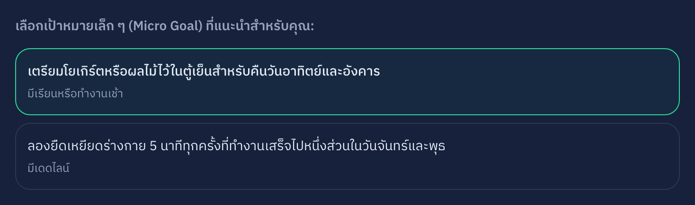
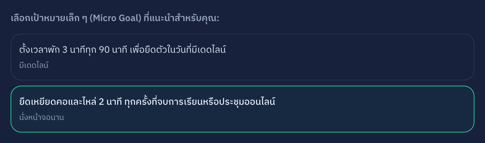
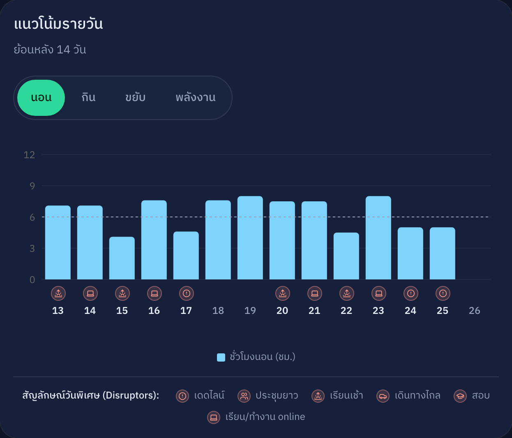
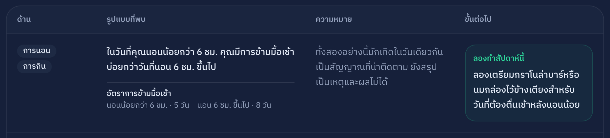
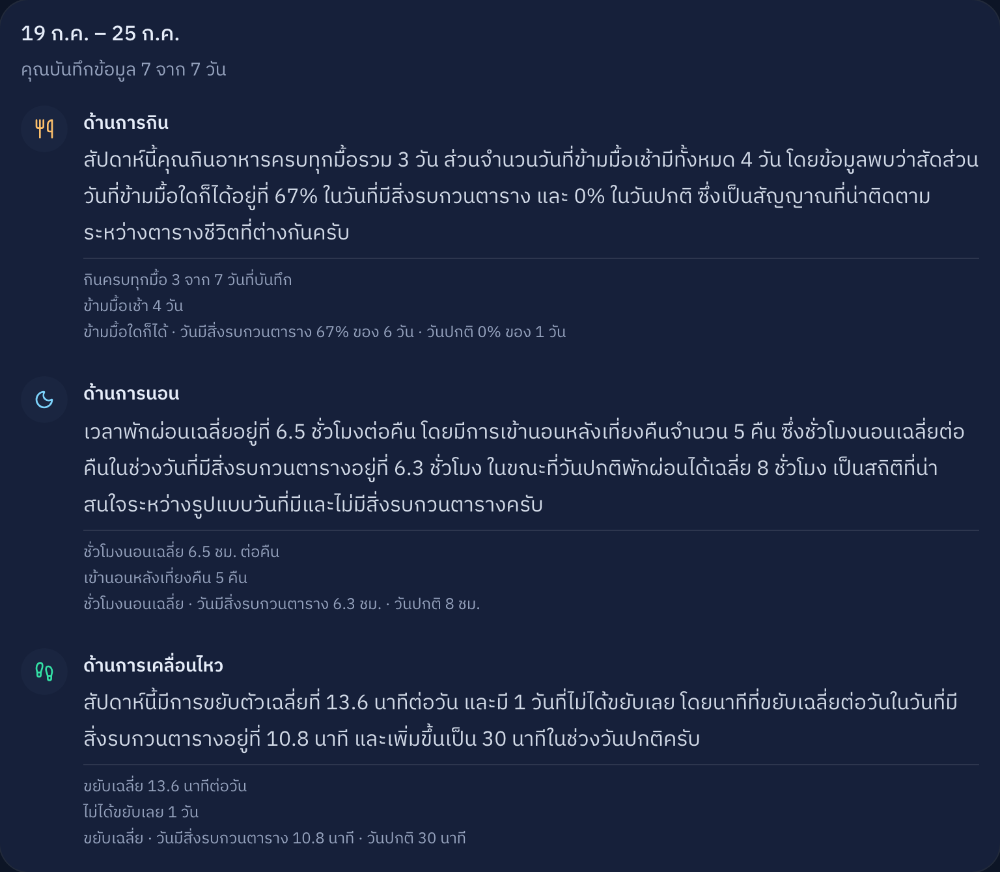
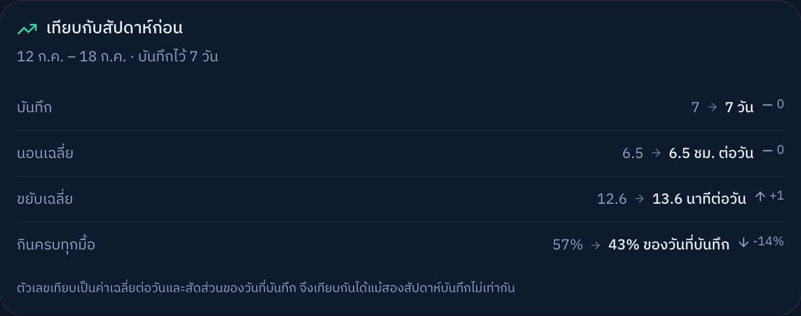
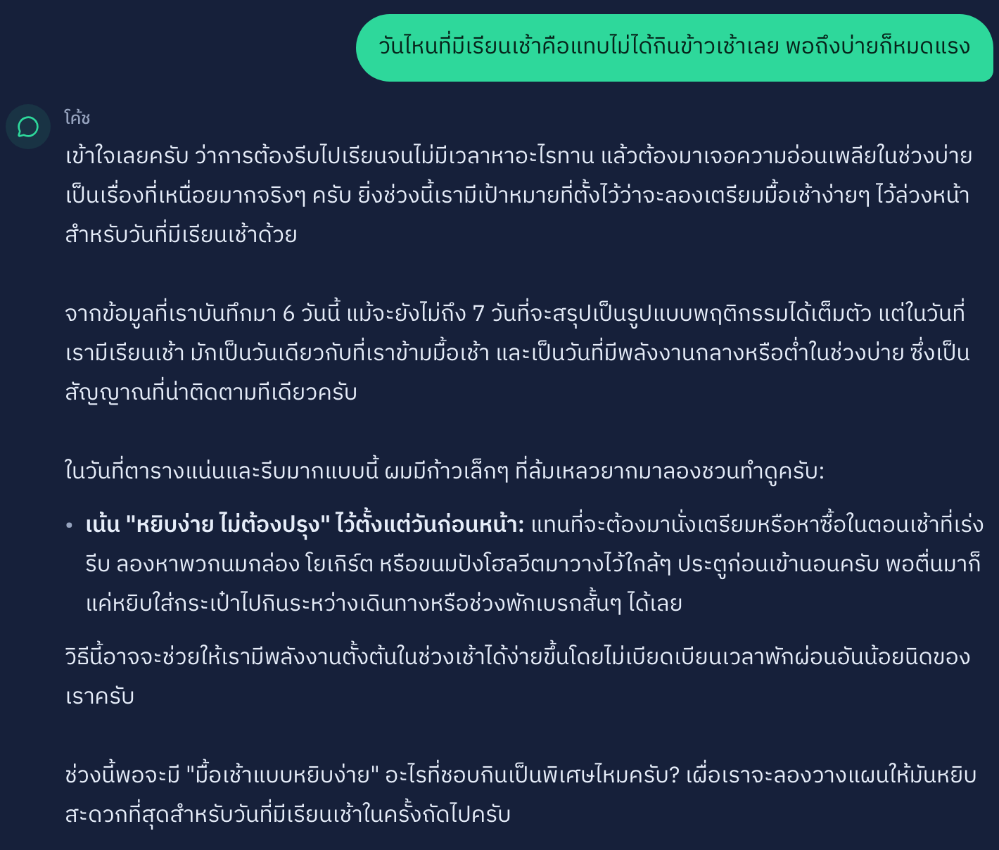
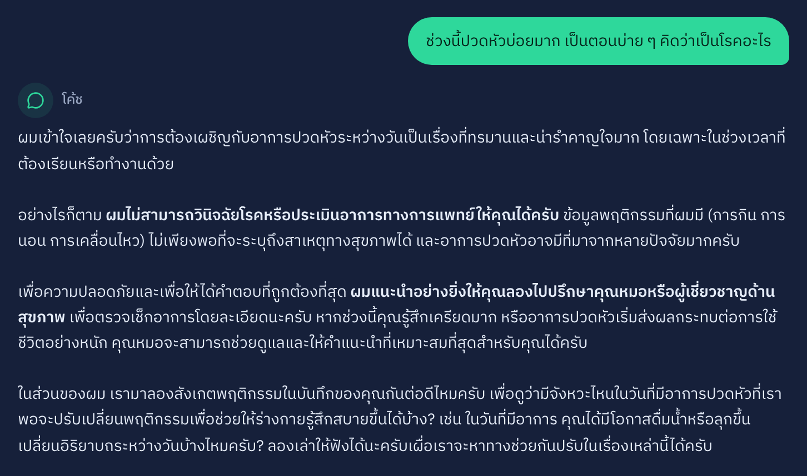

AI Personal Health Coach สำหรับนักศึกษาและ first jobber
“โค้ดถึงตี 3 กว่าจะ push ทัน แล้วต้องตื่นไปเรียน 9 โมง — ชานม 3 แก้วยังไม่พอ”
ทีม คีน · แพรรี่ · คีตะ · ไม้ · 30 กรกฎาคม 2026
Persona
“เคยโหลดแอปสุขภาพ เลิกใน 4 วันเพราะกรอกเยอะ · ไม่ชอบแอปที่ทำให้รู้สึกผิด”
2
วิธีแก้
ทำซ้ำได้ทุกสัปดาห์โดยไม่ต้องตั้งใจมาก — นั่นคือเงื่อนไขเดียวที่ทำให้คนกลุ่มนี้อยู่ต่อ
01
วันละครั้ง 4 ขั้น กดปุ่มล้วน คำถามเสริมโผล่เฉพาะเมื่อเกี่ยว
02
กราฟย้อนหลังทับด้วยปัจจัยรบกวนที่ผู้ใช้บันทึกเอง + ตารางรูปแบบที่พบ
03
เป้าหมายสัปดาห์ที่ผูกกับตารางจริงของคนคนนั้น ไม่ใช่คำแนะนำสำเร็จรูป
04
สรุปสัปดาห์เทียบสัปดาห์ก่อน แล้วตั้งต้นรอบใหม่
สิ่งที่เราตั้งใจไม่ทำ — ไม่นับแคลอรี ไม่ชั่งน้ำหนัก ไม่ให้คะแนนสุขภาพ ไม่วินิจฉัยโรค · ทั้งสี่ข้อคือเหตุผลที่ผู้ใช้กลุ่มนี้เลิกใช้แอปที่เคยโหลดมา
3
หนึ่งสัปดาห์ของปาล์ม
จากนี้เป็นระบบจริงบน production — ไม่ใช่ภาพ mockup
4
เดิน guided flow ชุดเดียวกัน — เปลี่ยนสิ่งที่เลือก คำตอบเปลี่ยน
เลือกด้าน “การกิน” · วันยุ่ง จ/พ

เตรียมโยเกิร์ตหรือผลไม้ไว้ในตู้เย็นสำหรับคืนวันอาทิตย์และอังคาร
เลือกด้าน “การเคลื่อนไหว” · นั่งหน้าจอนาน

ยืดเหยียดคอและไหล่ 2 นาที ทุกครั้งที่จบการเรียนหรือประชุมออนไลน์
ฝั่งซ้ายระบบไม่ได้บอกให้เตรียมมื้อเช้าวันจันทร์ แต่บอกให้เตรียมคืนวันอาทิตย์ — เพราะเช้าวันจันทร์คือเวลาที่ปาล์มไม่มี
5
AI / Technical Approach
ทุกตัวเลขที่ผู้ใช้เห็นคำนวณด้วยโค้ด — LLM มีหน้าที่เดียวคือแปลเป็นภาษาคน
โค้ด
บันทึกผู้ใช้
→
โค้ด
lib/patterns หาสถิติ
→
Gemini
เรียบเรียงเป็นภาษา
→
โค้ด
กรองคำต้องห้าม
ถ้า Gemini ล่มทั้งวัน — บันทึก กราฟ ตาราง และตัวเลขยังทำงานครบ หายไปแค่ประโยคบรรยาย
6
7
dogfood ตั้งแต่ 13 ก.ค. — เจอสิ่งที่ mockup ไม่มีทางเจอ
เจอ
โควตา Gemini ฟรีชนเพดานตอนทดสอบ safety → วินิจฉัยจาก API error → ย้ายโมเดลได้โควตา 25 เท่า โดยไม่เปลี่ยน provider
เจอ
guardrail รั่ว 4 จุด ตอนรัน checklist จริง → แก้หมด → รันซ้ำยืนยัน
8
ถ้าไปต่อ: ผู้ใช้จริง 10–15 คนนอกทีม → โควตารายคน → LINE reminder → wearable
“ดูแลสุขภาพจากก้าวเล็ก ๆ ที่ทำได้จริง โดยไม่รู้สึกผิด ไม่ถูกตัดสิน”
9
ระบบจริง
personal-healthcoach.vercel.app
บัญชีทดลองjudge@example.com /
judgecadence123
โค้ด + เอกสารทั้งหมด
github.com/nkieu-config/cadence-ai-health-coach
หลักฐาน safety ดิบ.scratch/ai-safety-test/
เอกสารออกแบบ 1–14 · mapping เกณฑ์ 9 ข้อ · issue tracker 65 งาน — README นำทางครบ
10
สำรอง A


11
สำรอง B


12
สำรอง C

13
สำรอง D

14